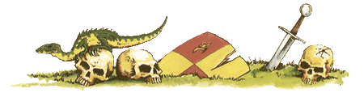

| |
Figuratalpak készítése

Az alábbi sorokban megpróbálok kicsit
a figurák talpainak elkészítésében segíteni,
tippeket, trükköket leírni. Gyakori ugyanis,
hogy az emberek, még azok is, akik kifestik a
figuráikat, nem törõdnek a talpak milyenségével,
holott az is igen sokat javíthat a figurán. Valószínûleg
azt hiszik, hogy nem éri meg a fáradtságot,
pedig szerintem a bele fektetett munka és az elért
hatás igen jó arányban állnak egymással.
A legegyszerûbb megoldással is rengeteget
javíthatunk a figuránkon, mindenképpen szebb,
mint az egyszerû, fekete talp.
Kezdetben érdemes meggondolni, hogy
milyenre is szeretnénk csinálni a talapzatot.
Alapesetben szimplán csak a figura alatti talajt
akarjuk megjeleníteni valamilyen formában, de
komolyabb "jeleneteket", kisebb dioráma-szerûséget
is lehet építeni rá. Az elsõ megoldás bõven
elegendõ alapegységekhez, míg a másodikat inkább
karakterekhez, szörnyekhez, seregünk kiemelkedõbb
tagjaihoz érdemes használni, mivel ez valóban
idõigényesebb tud lenni.
Kezdetek
Játékainkat zömmel valamilyen terepasztalon
játsszuk, így érdemes valami ahhoz passzolóban
gondolkodni (most nem említem azt a ritka esetet,
amikor valakinek több terepasztala is van.
(ilyenkor elõfordul, hogy valaki több talpat is
készít a figurájához, de ez meglehetõsen
ritka eset :) Az esetek túlnyomó többségében
ez füves, vagy valamilyen urbánus környezet, így
errõl a kettõrõl írok most kicsit részletesebben.
A terepasztalok nagy része egy nagyobb,
sík terület köré épül, amire feltesszük a
tereptárgyainkat. Legegyszerûbb megoldás,
amikor veszünk egy nagy, boltban egyben kapható,
fûlapot és leterítjük az asztalt vele, majd a
tereptárgyakat felpakoljuk rá. Ilyenkor egyértelmûen
a zöld a domináns szín, tehát a figuráink
talpait is zöld hatásúra érdemes készíteni.
Másik eset, amikor az igényesebb játékos
;-) elkészít egy komolyabb terepasztal-lapot,
amit a tetszésének megfelelõen fest, alakít
ki. Ilyenkor is inkább a természetes színek a
gyakoriak, a barna és a zöld, de ehhez hozzájönnek
még további lehetõségek. A városi környezet,
ami többnyire sötétebb, koszosabb színekben
gazdag: szürke, fekete, sötétbarna; téli táj,
ami zömmel fehér; sivatagos terep, ami sárgás-barnás,
illetve más további, ritkán elõforduló lehetõségek
(alien bolygó, mocsár, ...)
Mindig érdemes elgondolkodni, hogy az
általunk leggyakrabban használt terep valódi
megfelelõjében mi az ami jellemzõen gyakran elõfordul.
Az ilyen "elgondolkozással" jó ötleteket
találhatunk még a legegyszerûbb talp elkészítéséhez
is.
Füves, erdõs terepekre leginkább
jellemzõ dolgokból álljon itt pár gyakoribb
eset, a teljesség igénye nélkül. Legjellemzõbb
elem a fû, amibõl ugye többféle létezik. A fûben
akadnak virágok, gombák, nagyobb gyomok, gazok,
kövek, kisebb sziklák, és akár apróbb állatok,
rovarok is. Ha a mezõrõl kicsit beljebb megyünk
az erdõ felé, akkor megjelennek ágak, gallyak,
avar, rothadó, kidõlt fatörzsek, azokon esetleg
taplógomba, másutt kisebb fûmentes foltok a fák
árnyékában. Egészen belül pedig a fû eltûnhet
teljesen, a talajt inkább az avar és a korhadó
ágak, kéregdarabok jellemzik. Itt-ott kisebb
nagyobb, fényre nem igényes aljnövényzet, páfrány,
moha, bokrok, a fény hiányában elfajzott friss
hajtások.
Sziklásabb mezõkön a kövek gyakoribbá válnak,
azokon zuzmók, mohák, a mostoha talajviszonyokat
jobban bíró, sziklák közt megtelepedõ apró növények,
virágok.
Emberkéz készítette tárgyak, dolgok is elõfordulhatnak,
például egy tanyai környezetben. Ilyen esetben
a fû helyett adott esetben valamiféle takarmánynövény,
felásott föld is szóba jöhet alapként.
Attól függõen, hogy mekkora a figuránk
talpa és hogy milyen a figura, lehet összetettebb,
vagy egyszerûbb designban gondolkodni.
Karaktereknél és fontosabb figuráknál a kisebb
talpra is érdemes lehet valami komolyabbat fabrikálni,
vagy a kis talpat lecserélni egy nagyobbra és
arra valami komolyabbat csinálni. Nagyobb talpak
leginkább szörnyek, lények, jármûvek esetén
fordulnak elõ, ilyenkor pedig eleve több helyünk
van, amit érdemes kihasználni, kitölteni.
Anyagok
Mint tereptárgyépítéshez, ehhez is
rengeteg házi szemetet fel lehet használni, bár
nyilván itt bizonyos mérethatárok érvényesülnek. Például érdemes gyûjteni a parafa dugókat,
ezekbõl nagyszerûen lehet faragni mindenféléket
(éles szerszámmal, borotvapengével), leginkább
kisebb sziklákat, sírköveket, ilyesmiket. Ha
otthon nincs elég, akkor akármelyik étteremben
szívesen adnak. Drót különbözõ átmérõkben,
gyufa, több méretben is, hengeres fogpiszkáló,
és minden egyéb, ami hasznosnak látszik jól jöhet
(kidobni késõbb is lehet :-).
Alapanyagok :
Kavics, homok.
Akvarista üzletben kapható, osztályozott
kavicsok, homok különbözõ méretben. 4-5 félét
biztosan lehet kapni, túl nagyot nem érdemes
venni, de a legapróbbtól kezdve 3-4 méretben érdemes
beszerezni. Ezeket jó nagy zacskókban adják, néhány
száz forint körül, nem egy nagy kiadás.
Mûfüvek:
Sokféle létezik a zöld különbözõ árnyalataiban,
továbbá barnás, sárgás és egyéb kevésbé
gyakori színekben. Anyagukban is különbözõek
lehetnek. Alapban a festett, darált parafa a
legjobb, ilyen a GW egyik mûfüve is. Az ilyen mûfû
apró kis, gömbre hajazó darabkákból áll. Van
továbbá hasonló, de nem parafából, hanem
faforgácsból készült, ez olcsóbb és silányabb
is minõségben. Az ilyenek gyakran vesztenek a színükbõl
ha fénynek vannak kitéve, vagy szimplán csak az
idõvel romlik az árnyalatuk. Érdemes lehet a
kicsit drágább, de jobb minõséget választani,
mint egy fél év múlva a figuránk elfonnyadt
talapzatát nézni.
Létezik az úgynevezett statikus mûfû, ami
teljesen más hatást ad, és apró, 3-4 milliméteres
szálakból készül. Jobban hasonlít a valódi fûre,
mint az elõzõ és ebbõl többnyire több szín
is elérhetõ, mint a másikból.
Legalább egyfajta mûfüvet ajánlott beszerezni,
egy zöldet, aztán késõbb más árnyalatokkal,
színekkel bõvíteni.
Kapható nagy lapokra ragasztott mûfû is, ami a
figurák talpainak elkészítésénél nem olyan
hasznos, bár adott esetben kivághatók belõle
darabok és így használható ehhez is.
Kartonpapír:
Bármilyen kartonpapír jól jöhet, ebbõl
mindenféle formákat tudunk kivágni. Városi környezet
esetében használhatjuk kövezet modellezéséhez,
de sok máshoz is jól jöhet.
Alapok
A talpat a figura elkészítése után érdemes
megcsinálni. Alapeset, hogy a figurát beleállítjuk
a talpba és mindössze valamilyen textúrával a
talajt modellezzük. Ezt érdemes úgy csinálni,
hogy a figura nincs benne a talpban, de ilyenkor
vigyázni kell, hogy amit a talpra építünk, ne
zavarja késõbb a figura helyére ragasztását.
Érdemes valahogy megjelölni azokat a részeket,
ahova a figura miatt nem lehet építeni. Ha már
a figura a helyére van ragasztva, akkor kicsit óvatosabban
kell bánni ragasztóval, festékkel, nehogy a már
kész figurára ráfessünk véletlenül. Olyankor
az ember káromkodni szokott, hangosan.
Több lehetõségünk is van, ezek közül
a legegyszerûbb a készen kapható mûfüvek
használata. A base-t lealapozzuk fehérre, majd zölddel
(Goblin Green) egy egyenletes alapszínt viszünk
rá. Ehhez lehet, hogy többször is át kell
menni a felületen. A base felsõ lapjára ezután
ragasztót kell kenni óvatosan, amibe majd a mûfüvet
szórjuk. A mûfüvet egy lapos edénybe tegyük
ki elõre, ami felett dolgozhatunk úgy, hogy nem
szóródik szanaszét az asztalon. Ragasztónak
olyat válasszunk, ami ecsettel vagy más módon könnyen
felvihetõ. Jó lehet a Citadel PVA glue, vagy
ahhoz hasonló más, olcsóbb, ragasztók, ezek ráadásul
nem is oldják a festéket. Egy normál kerek
base-nek egyszerre csak az egyik felét kenjük
meg, majd az edény felett egy csipesszel, vagy akár
kézzel rászórunk a mûfûbõl. Kézzel azért
nem olyan szerencsés, mert ezek a mûfüvek elég
makacs dolgok és némelyiktõl nehéz
megszabadulni. Valamivel belenyomogatjuk a ragasztóba,
utána a felesleget visszaszórjuk az edénybe. A
talp másik felét ugyanígy megcsináljuk, aztán
kicsit hagyjuk száradni. Ha nem fed a mûfûréteg
eléggé, vagy egyszerûen csak tömöttebb hatást
akarunk elérni, akkor száradás után újra végigcsináljuk
az egészet, egy újabb réteget ragasztva fel.
Statikus mûfûnél nem jó második réteget
ragasztani, de nem is nagyon kell, az elég tömött
önmagában is.
Ezzel készen is van egy egyszerû base, az
egész nem vesz többet igénybe, mint 5-10 perc,
ha a száradást nem számítom. Ha egyszerre többet
is csinálunk, akkor a száradási idõt be lehet
integrálni a többi elkészítési idejébe, így
tovább csökken a szükséges idõ. Adott esetben
festés nélkül is viszonylag jó hatást lehet
elérni, de ekkor igyekezni kell minél tömöttebbre
csinálni a fûréteget, hogy a fekete alapszín
ne látsszon ki alóla.
Egy fokkal összetettebb módszer, ha a
fûréteget magunk festjük meg és nem mûfüvet
használunk. Ehhez kell majd az akvarisztikai
homok, amit az alapanyagoknál említettem. A ragasztóval ugyanúgy járunk el, mint a
korábbi esetben, de nem mûfüvet, hanem aprószemû
homokot rakunk bele. Ha jó homokunk van, és ügyesek
vagyunk a ragasztással, akkor el lehet érni,
hogy a felragasztott réteg egyenletes, 1
homokszem magasságú legyen. Festés után így
szép, gondozott gyepes hatású lesz.
Persze több rétegben is lehet ragasztani,
ha az elsõ nem lett megfelelõ, vagy nem annyira
egyenletes hatást akarunk elérni. A második réteget
lehet kicsit egyenetlenre csinálni, csak itt-ott
ragasztva fel, így dombosabbá válik a hatás. Ha ez megszáradt, akkor le lehet alapozni
fehérrel. Erre jön majd egy Goblin Green réteg.
Ha ez is megszáradt, akkor ízlés szerint fehérrel
vagy sárgával keverve "megdrybrusholjuk".
Ha egyenletesre csináltuk a homokot, akkor érdemes
a drybrusht is egyenletesen csinálni, ha
dombosabbra, akkor emeljük ki a dombocskákat egy
még világosabb árnyalattal. A festés miatt és az ahhoz szükséges száradási
idõk miatt ez némileg több idõt vesz igénybe,
mint az elõzõ megoldás. Más hatást ad,
viszont több kontrollunk van a végsõ összhatás
felett. További elõnye, hogy bármilyen színt
alkalmazhatunk: barnát, szürkét, fehéret, stb.
A fentebbi módszereket kombinálhatjuk
is. Különösen akkor jó ez, ha nem teljesen zöldre
akarjuk a base-t csinálni, hanem inkább erdõs,
vagy ligetes környezetbe illõen. Ilyenkor a
homokot ugyanúgy felragasztjuk, ahogy ez elõbb,
de nem zöldre, hanem például barnára festjük
és "highlightoljuk". Ehhez jó színkombináció
a Bestial Brown/Vomit Brown/Vomit Brown + Skull
White. Az egész alapot lefestjük elõször fehérre,
majd Bestial Brownra, úgy, hogy egyenletes legyen
mindenütt, különösen a base oldalán. Utána
Vomit Brown, majd kis Vomit Brown + Skull White
drybrush. Ahogy a világosabb árnyalatok felé
haladunk, nem muszáj mindent egyenletesen
kenegetni, a változatosság kedvéért itt-ott erõsebben,
másutt gyengébben, vagy egyáltalán nem viszünk
fel festéket. Így lesznek sötétebb foltjaink,
ahova például kisebb mohatelep gyanánt egy kis
csomó mûfüvet ragaszthatunk késõbb.
Feldobhatjuk még más apróságokkal is, kövekkel,
gombákkal, vagy bármivel, ami beleillik az elképzelésbe. A végsõ hatás így már igen jó lesz és
az idõigénye sem olyan vészes, gyakorlatilag
nem sokkal több, mintha csak simán a homokot
festettük volna ki.
Ha nagyobb sziklát, követ, vagy egyéb
apróbb tereptárgyat is akarunk a talpon látni,
akkor azt még a mûfû elõtt fel kell ragasztani
és kifesteni, illetve a második esetben a
homokkal együtt felragasztani és a többivel együtt
festeni.
Kicsit komolyabb módosítás, ha mondjuk
parafa dugóból levágunk egy igény szerinti
vastagságú korongot és egy plusz réteget
ragasztunk a talpra úgy, hogy ne lógjon le sehol
a széleken, a lehetõ legjobban passzoljon a base
széléhez. Ezután belefaragjuk a rést, ahova
majd a figura jön, és az egészet egy pengével
úgy alakítjuk, hogy egy sziklához hasonlítson.
Egy kis putty-val, green stuffal, vagy textúrázással
be lehet segíteni, ha szükséges, bár a parafa
dugóból elég jó sziklalakot lehet csinálni
magában is. Ezt utána szépen ki lehet festeni
majd a figurát beragasztani.
Karakterekhez, nagyobb base-ekhez összetettebb
kompozíciókat készíteni már kicsit a tereptárgyépítés
felé hajló feladat. Egy jól kigondolt jelenetet
kell aprólékosan felépíteni, aminek elkészítésében
csak a fantáziánkra hagyatkozhatunk. Nem nagyon
van igazán jó, minden esetre alkalmazható
recept, bár akad pár dolog, amit érdemes szem
elõtt tartani.
Mindig gondoljuk ki elõre, hogy mit
akarunk csinálni, az passzol-e a figurához, a
fajhoz, történethez. Velem nem egyszer megesett,
hogy kezdeti igyekezetemben, hogy minél hamarabb
készen legyek és lássam az eredményt végre,
csak elkezdtem gyorsan összecsapni valamit, aztán
nem lett igazán jó. Akár le is rajzolhatjuk egy darab papírra
az elképzelést kezdetnek. Rengeteg apróságot
fel lehet használni az építéshez, attól függõen,
hogy fantasy vagy 40k (illetve más futurisztikus)
környezetbe illeszkedik a figuránk.
Tippek:
Gomba:
Egyszerû kicsi gombát készíthetünk
hurkapálcából. Vegyünk egy hegyezõt, és a
hurkapálca egyik végét hegyezzük ki óvatosan.
Maga a hurkapálca általában elég szálas,
hasadós anyag, igy ez nem mindig megy könnyen. A
hegyezett részt egy finomabb dörzspapírral simítsuk
el. Ha megvan, akkor ahol a hegyezett vég kúpja
véget ér, ott egy éles szikével vágjuk el a pálcát.
A kúp lesz a gomba feje. Egy darabka vékonyabb,
de erõs drótból vágjunk neki tetszés szerint
szárat, majd ragasszuk a kúp talpára és már
meg is van a gomba. Ezután fel lehet ragasztani a
talpra és festeni. A drótszár elõnye még,
hogy hajlítható.
Másfajta, félgömb kalapú gombát
kapunk, ha a hegyezés után a kúp hegyét levágva
és óvatosan faragva, reszelve, egy félgömbre
alakítjuk.
Városi
talp 1, Városi
talp 2, Városi
talp 3, Városi
talp 4, Városi
talp 5, Erdei
talp
írta: Stark
|
|